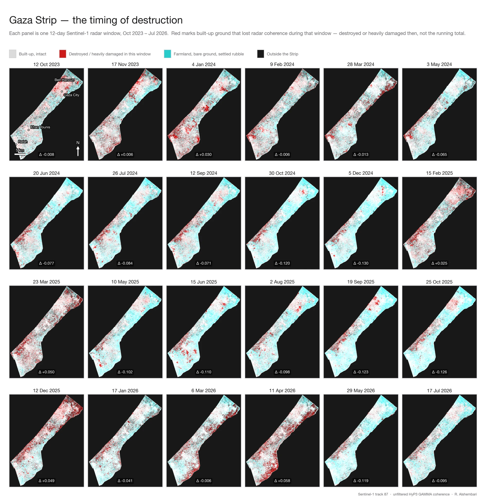
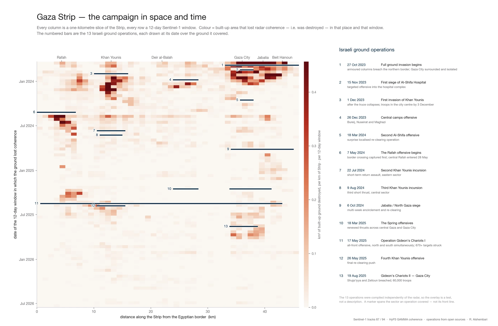
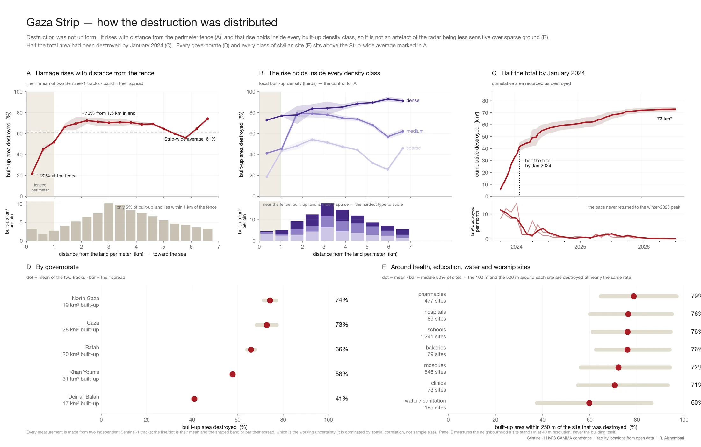

Figure 1 · the timing of destruction, as a player
The static figure is 24 small panels, one per 12-day radar window. Here it is one map instead — press play to run the sequence, or click any bar in the timeline to jump to that window. The bar heights are the Δ (Strip-wide coherence change) for each window.
Show the original static figure for comparison

The same data as one accumulating map
Every 40 m patch of ground the radar records as destroyed, coloured by when it happened. Drag the slider (or press play) to move the clock forward and watch the damage spread across the Strip. Hover any point for its onset date and how far along the Strip it sits.
Figure 2 · the campaign in space and time
Every column is a one-kilometre slice of the Strip (the Egyptian border on the left), every row a 12-day radar window (October 2023 at the top). Colour is the built-up area destroyed there, then. The bars are the 13 recorded Israeli ground operations — hover one in the list to pick it out on the chart.
Israeli ground operations
Compiled independently of the radar, so the overlay is a test, not a description. A bar spans the sector an operation covered — not its front line.
Show the original static figure for comparison

Figure 3 · how the destruction was distributed
Hover any series for the underlying values. The panels reflow to the width of the page, and the chart is vector SVG, so it stays sharp at any zoom or print size. Toggle the individual satellite tracks to see the spread that the shaded band summarises.
A · Damage rises with distance from the fence
Destroyed share of built-up area against distance inland from the land perimeter. Below: where that built-up land actually sits — only about 5 % of it lies within 1 km of the fence (shaded red), most of it 2–4 km inland.
C · Half the total by January 2024
Cumulative destroyed area over time, with the monthly rate below.
B · The rise holds inside every density class
Panel A re-tested inside each third of local built-up density. If the gradient were a detection artefact over sparse ground it would vanish here; it does not.
D · By governorate
Destroyed share of each governorate's built-up area. Bar = mid-estimate · line = two-track range.
E · Around civilian sites
Built-up area within 250 m of each site type that was destroyed. Bar = mean · line = middle 50% of sites.
Reading D and E
Every value is measured from two independent Sentinel-1 tracks. The bar is their mid-estimate; the thin line is the two-track range (D) or the middle 50 % of individual sites (E).
Panel E describes the neighbourhood a site stands in, at 40 m resolution — the areas within 100 m and within 500 m come out almost the same. It is not a building-level assessment of the facilities themselves.
Every class sits above the Strip-wide average of ~61 % marked in panel A.
Show the original static figure for comparison

Figure 4 · who lived on the ground that was destroyed
The pre-war resident population (WorldPop 2020) crossed with the coherence damage map. The colour of each spot is how many people lived there before the war, per hectare, on ground that was later destroyed — move the pointer over the map to read it off; the three charts below are inspectable on hover too. The homes of roughly 1.0–1.1 million people — over half the pre-war Strip — stood on ground the radar records as destroyed. This is the pre-war resident population of that ground; it is not a displacement count and not a casualty count.
Along the Strip
Pre-war residents per kilometre — everyone (line) versus those who lived on ground later destroyed (bars).
By governorate
Thousands of pre-war residents of destroyed ground. Bar = mid-estimate · line = two-track range · label = share of that governorate's pre-war population.
Almost nobody lived near the perimeter
Pre-war residents by distance from the land perimeter — everyone (pale) and those on destroyed ground (red). About 29,000 people, 2 % of the built-up population, lived within 1 km of the fence.
Show the original static figure for comparison

What this direction buys, and what it costs
In favour
- One artefact does more. Twenty-four small panels you squint at become one readable map with a time control; the five-panel chart becomes inspectable on hover.
- Resolution-independent where it counts. The Figure 3 charts are vector SVG — sharp on a phone, a 4K monitor, or in print, from one source.
- Responsive. Everything reflows to the column width instead of shipping a fixed-width raster.
- One styling system. Type, colour and spacing come from the site's own tokens, so figures and page always match — including dark mode.
- Manageable payload. The chart data for Figures 2–4 is ~35 KB combined, and Figure 1's accumulating map is one 55 KB encoded grid the browser re-composites live. The heavy part is the 24 Figure 1 frames — ~5.5 MB at 3× native resolution — but they load only when the reader engages with that figure, one at a time in the background. Figure 4's map is ~250 KB. The chart libraries are shared across pages.
Against
- Needs JavaScript and about 490 KB of libraries (Plot + D3) for the charts, self-hosted here so there is no third-party dependency.
- Annotation is fiddlier than in matplotlib — leader lines, curved callouts and fine label placement take real effort.
- Imagery is still pre-rendered. The map frames are composited by the Python pipeline and shipped as pictures; the browser only swaps and labels them.
- Not the analysis tool. Python still produces the authoritative figures and the numbers behind them; this is a presentation layer built from an exported summary.
A reasonable middle path: keep Python as the source of record — and as the renderer for anything image-based — then add a thin browser layer that makes those outputs interactive.